Every part of StellAurator, with screenshots. The home page is the short version.
Casting
A voice and a face for every character
The cast list shows every speaker found in your manuscript. Each character gets a color and a voice, and a portrait from a gallery of 445. Open Character Tags and pick a portrait for each one, or press Best fit auto assign for the whole cast at once. A character with no voice yet is flagged, and so is a line whose speaker is in doubt, before you record or generate anything.
445 portraits across seven galleries: sci-fi crew, deep space, fantasy folk, city at night, every age, and more
Best fit auto assign, or assign at random
A voice, a color, a gender and pronouns for each character; a nickname and a full name are joined into one person, so “Elizabeth” and “Miss Bennet” are one
A line whose speaker is in doubt shows Who says this? with the likely names
A warning for any character still without a voice, before any credits are spent
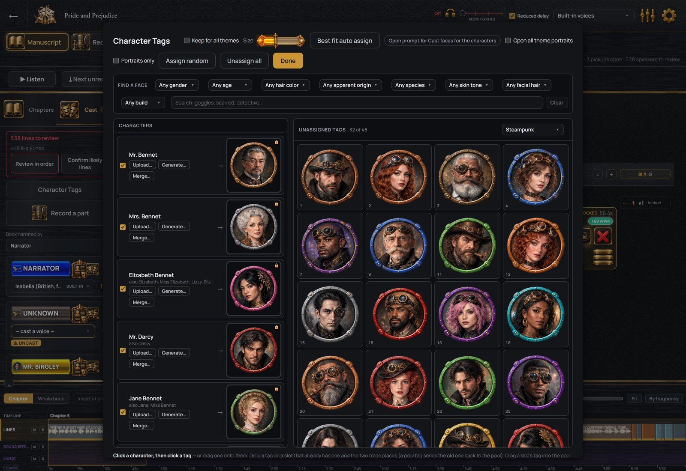
Character Tags, with faces chosen for the Bennets and Mr. Darcy.
The cast list
Each card shows the character’s voice and portrait and how many lines they have. The microphone button on the card opens their part for recording.
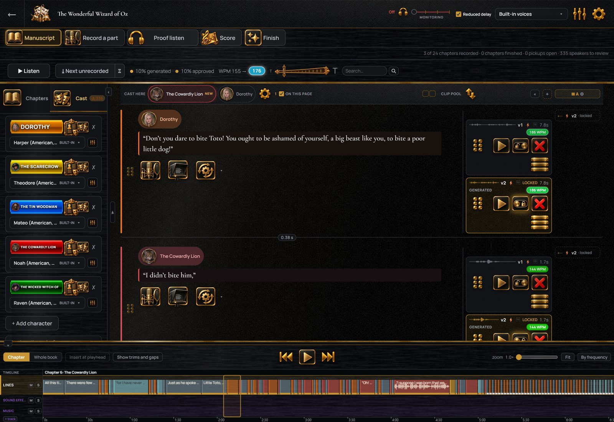
The cast of The Wonderful Wizard of Oz.
Recording
A whole chapter read from the on-screen script
The script scrolls at the pace you set, with the current line held in a highlighted band, and you read without touching the recording controls. Stop, reread a sentence and carry on. A session runs from a page to the whole book. When you stop, the reading is divided into the manuscript’s lines by the words you read, on your own computer, with no account or key and nothing sent anywhere. Each piece is filed under its line with its waveform and length, and those lines are marked as recorded.
Each take is also compared with its line. A word you left out or changed is marked on the take, and you say whether that was on purpose or a mistake. A single line is recorded on its own the same way. Read the chapter straight through, then re-record the lines that need it.
A count-in before recording starts; the pace and the text size are yours to set
Record one line at a time or a whole chapter in one session
The sound of the key or mouse click that stops a recording is removed automatically
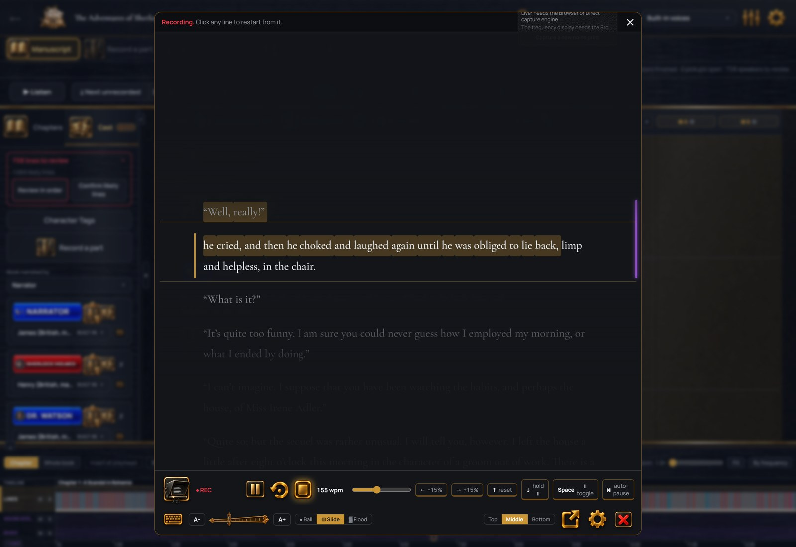
The on-screen script, part way through a chapter of The Adventures of Sherlock Holmes.
Your own voice in your headphones while you record
StellAurator opens your microphone through the driver that came with it, and you hear yourself in your headphones with no processing added. Your other programs keep the headphones too; nothing else is muted while StellAurator is open. A Reduced delay switch takes the delay down to the shortest your hardware supports. Which microphone to buy, by budget, is in the microphone guide; the interfaces and the headphones have their own guides.
Any microphone Windows can see, from a USB microphone to a studio interface
Live meters for level and background noise, and a test recording
One gain setting for every recording made on this computer; the unprocessed original is kept if you ask
A noise print of your room, captured in a few seconds of silence and used by the noise reduction
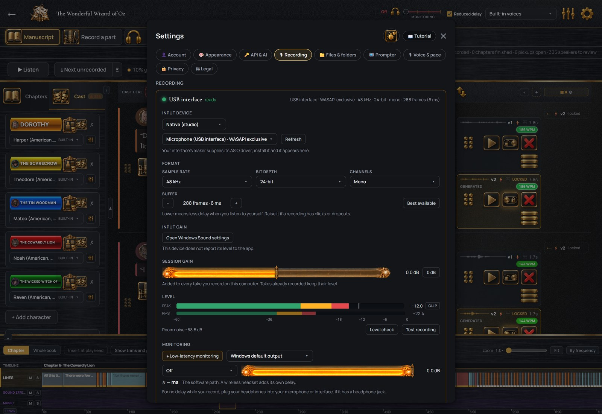
Settings › Recording, with the meter live.
Recordings made elsewhere
A chapter recorded in another program is imported as a chapter of recordings. Drop the file in and choose the chapter, and the file is divided into your lines by the words, on your own computer, or at its pauses. Nothing is sent anywhere, and the file itself is never changed. Where the recording and the manuscript disagree, you decide, line by line.
Most common sound files: mp3, wav, flac, m4a, m4b and ogg
Divided by the words or at the pauses, both on your own computer
A reread sentence produces two takes on one line, and you choose which to keep
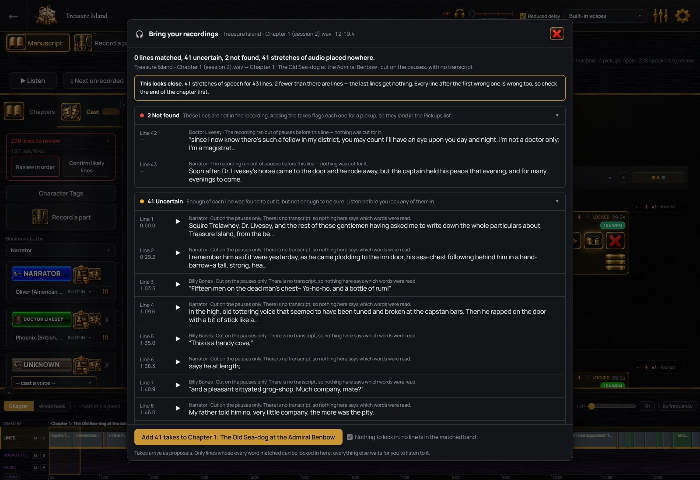
The lines that matched, and the audio left over.
Several actors, each recording their own part
Cast as many actors as the book needs. Each actor gets an invitation link and a free copy of StellAurator that shows only the lines assigned to them, scene by scene, with your direction above the script and the line before each one played as a cue. Their recordings come back to you onto their lines, where you accept each one or mark it for another take. The production stays on your computer.
You choose how much of the script an actor sees, from their own lines to the whole book
Direction written once, for a scene or for a line, and shown where it applies
Pronunciations for the names in their lines, shown where they occur
Pickups are sent back to the actor who recorded the line, from the Pickups list
Direction
Direction for every line, written once
Direction is the note a director gives an actor before a take. In StellAurator it is written once on the line it belongs to, and whoever records that line sees it, whether that is you or an invited actor. A voice service that takes direction gets it too. It is kept apart from the manuscript text and never changes a recording already made.
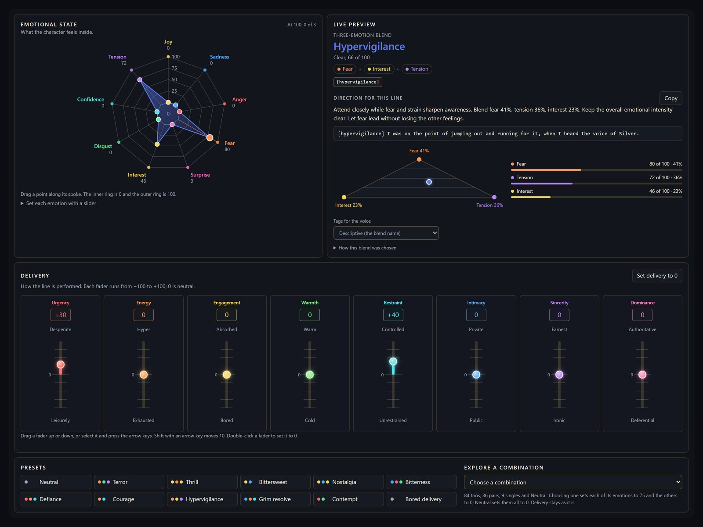
The direction control on a line of Treasure Island, with the character’s emotional state on the web and the note written from it.
Actors see your direction on every take
Direction is written for a scene, for a character within it, for a beat where the scene turns, or for a single line. It stays on screen above the script while the take is recorded, and an actor recording at home reads it there. Your notes are also there when you come back to a chapter yourself.
Set a mood on any line
Drag the character’s feelings into place on the emotional web, with up to nine feelings at once, and set the delivery on eight faders, from urgency to warmth. The blend is named (Bittersweet, Grim resolve) and a direction note is written from it, such as “Attend closely while fear and strain sharpen awareness.” Twelve presets, and quick chips for narrator lines, set a mood with one click. A note you wrote yourself is never overwritten.
Auto Direct a scene or a chapter
With a text AI service connected, Auto Direct sets a mood on every line of a scene or a chapter, based on the scene so far and on who the character is at that point in the book. It reads only what comes before the line. Every line is a separate undo step, and lines you directed by hand are left as they are. Direction also goes to the voices that take it. ElevenLabs v3 and v4 voices get the mood as a short tag in front of the line.
Clean-up
Fixes suggested under each recording
Each recording is checked for clicks and pops, for breaths, for hum and for background noise, and a fix for each one is listed under it. Review plays the recording before and after, with every fix marked on the waveform. Drag across a breath you want to keep and that fix is skipped. Apply keeps the set.
A fix is a layer over the recording. You turn a fix off or remove it later, and the original recording is never changed. An icon on each recording shows what has been applied; click it for the list and for where each fix sits.
Clicks and pops repaired, plosives softened, breaths lowered, background noise reduced where it is audible
A background sound (another voice, a door) is marked and the line is flagged for re-recording; a sound under your voice cannot be removed
One fix of each kind per recording; applied again, it changes that fix in place
You turn suggestions off per book, or limit them to the kinds you choose
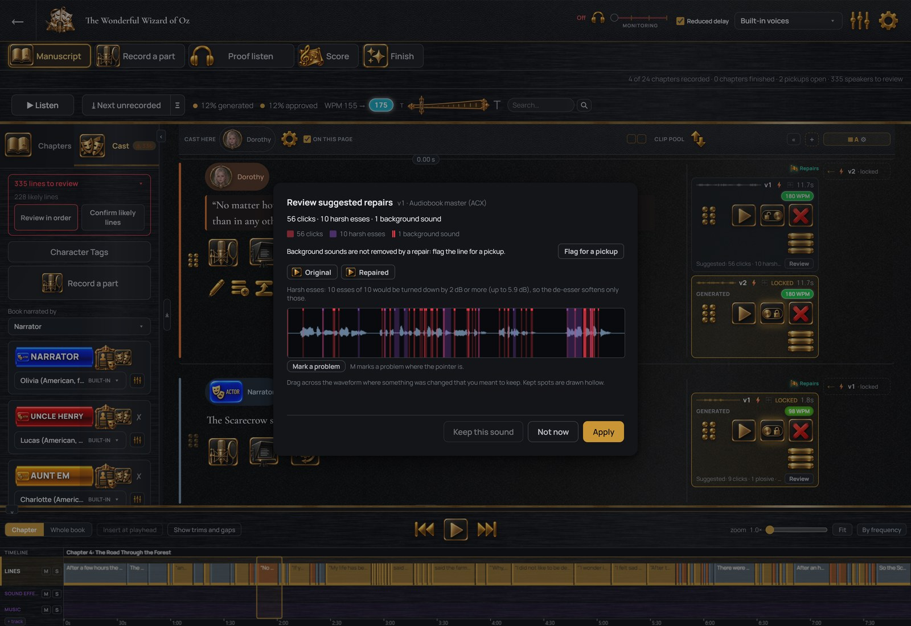
One line and its recording, with the suggested fixes.
Every take is kept
Each line keeps every recording made of it, with its waveform and length, until you delete one, and you pick the one to use. A spool is one complete reading of the book, made from the recording picked for every line. Spools A and B hold two readings side by side, and you export either.
As many recordings per line as you like
The newest recording is picked until you pick another
Two versions of the book, or as many more as you add
Filters: computer voice, voice-changed, as recorded, not yet picked, accepted
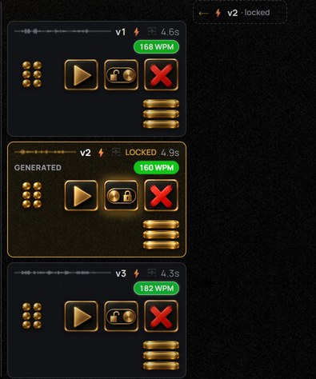
Three recordings of one line, one picked.
Tidy-up as a recording is saved
Once you set them for the book, the tidy-up settings apply to every recording as it is saved: a rumble cut for low-frequency noise, a softener for harsh S sounds and three tone controls. One gain setting covers every recording made on this computer, and each chapter’s loudness is set when it is exported.
A rumble cut and an S softener, set once for the book
Three tone sliders: warmth, presence, air
The click of pressing Stop is trimmed from the end
A pronunciation guide for names the voices get wrong
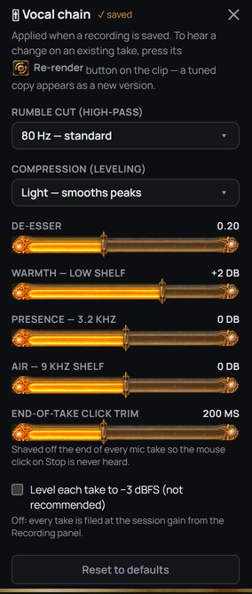
The processing settings applied as a recording is saved.
Two readings, side by side
Spool A and spool B are two columns beside the lines. Pick a different recording in each where you want to compare, and play either spool through. You add more spools as you need them.
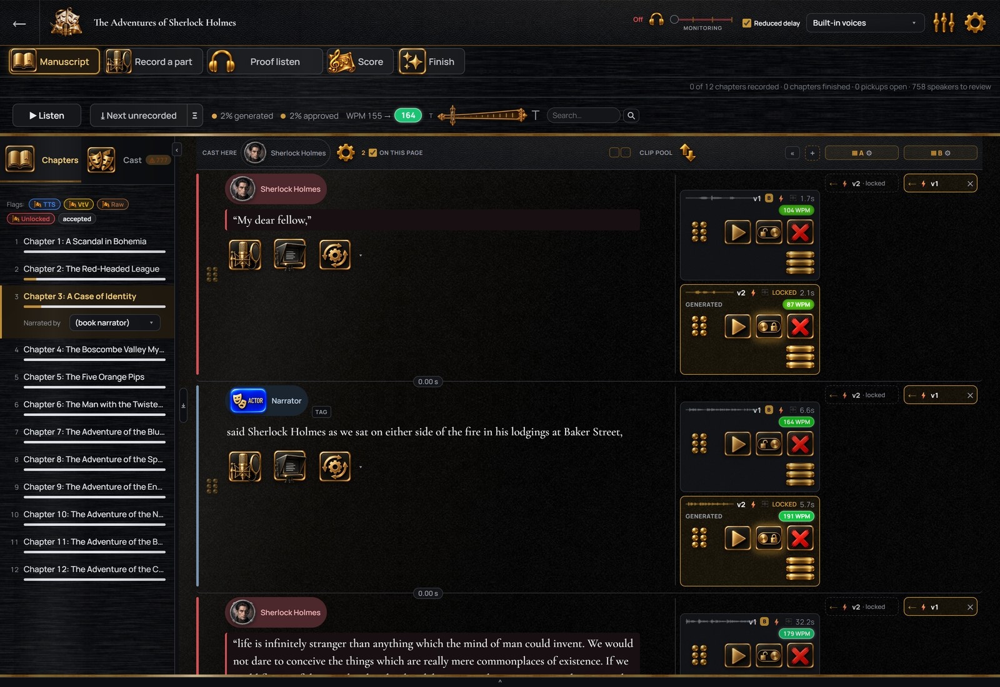
Spools A and B, with different recordings picked on two lines.
Fixing by hand
The repair tools
The repair screen holds the tools the suggestions are made from, for one recording or for every selected line. The tools are grouped on the right. Choosing one opens it under the recording, with its settings, before-and-after playback and Keep.
Before and after on every tool, aligned in time and at matched loudness
Keep for one recording or for every selected line
A saved sequence of fixes that runs as one step
A spectrogram; draw a box around a sound to remove it
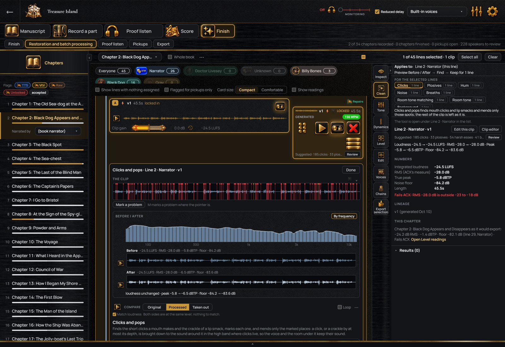
The repair screen, with a tool open under the recording.
The timeline and the music
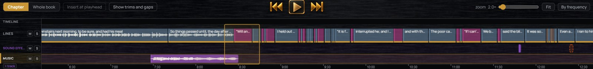
The chapter timeline. Each line is a block you move and retime. Music and sound effects have their own tracks underneath, each with mute and solo. The view switches between one chapter and the whole book.
Music cues, suggested from the text
With an AI service connected, Auto Score reads each chapter and marks where music belongs, such as where a scene turns or where the tension peaks. Each cue gets a mood and a one-sentence reason, and it is tied to the words it belongs to, which keeps it in place when the chapter is edited.
You give the book a musical identity first, in your own words or by naming films and games whose music is close to what you want. Your own music and sound effects go under the lines from the sound library, which also imports files from your computer, and a service you connect generates music and effects to match that identity. Music runs under a scene, and a short hit or a sound effect sits between two lines. The list of music cues prints out for a composer.
A musical identity for the whole book, with how closely each chapter follows it
Music under a scene and short hits between lines, each with a mood and an intensity
Every music cue is tied to quoted words
Your own music and effects on tracks under the lines, in a library sorted by kind
A printable list of music cues
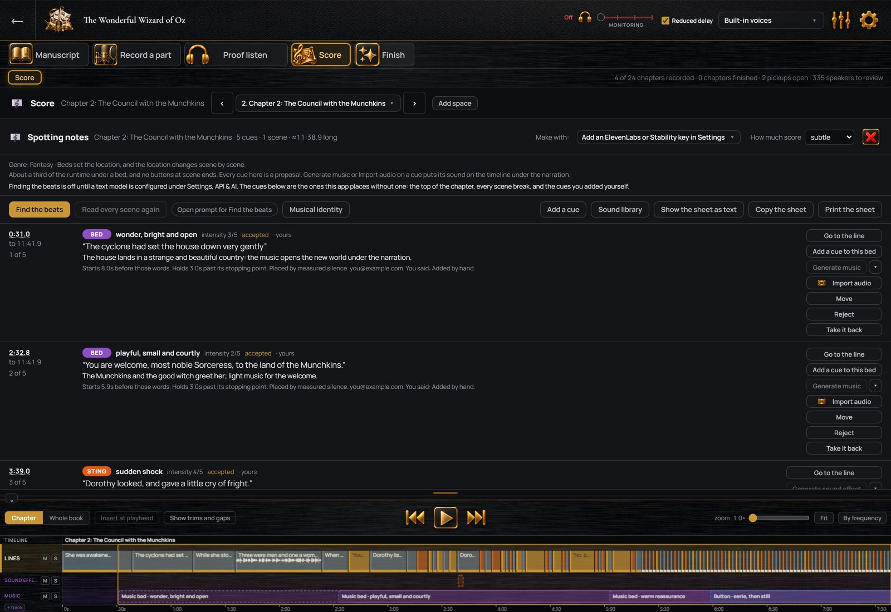
The list of music cues for one chapter.
Finishing and saving
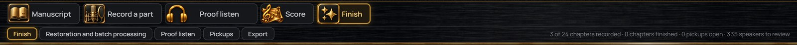
The strip at the top of the window shows the four stages of the work and the steps within the current stage, with a count of the chapters recorded and finished.
A proof listen of each chapter before delivery
Proof listen plays a chapter as it will be exported, including pauses, and ticks off each line as it is heard. Press F on any line to mark it for re-recording without stopping playback. When every line has been heard, you sign the chapter off. If a line is changed later, only that line needs hearing again.
A tick per line as it is heard, at up to 1.5x speed
The book’s pause lengths, adjustable while you listen
Marked lines wait in Pickups until you re-record them or send them to the actor
Sign-off per chapter
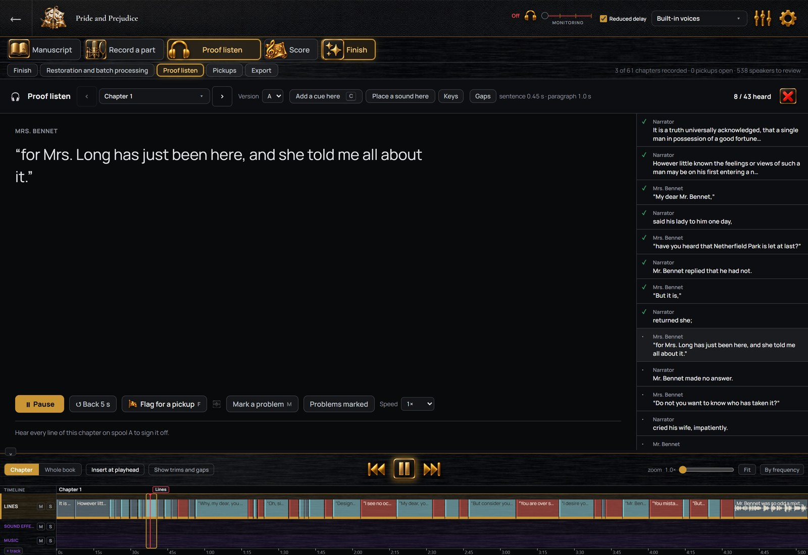
Proof listen, three lines in.
Five steps from the recordings to the files
Choose the output format: Clean narration, Audiobook master for Audible’s ACX, Podcast, or your own recipe. The Finish screen then runs the chapter, or the whole book, through five steps. Diagnose measures every recording and reports what it found, in words and numbers. Plan lists what will be done. Apply does it, as removable layers. Check measures the result against the requirements. Export writes the files.
For each chapter, loudness, peaks, noise floor and a pass or fail against ACX’s technical requirements, measured before the fixes and after them
For each recording, its loudest and quietest moments and the fixes applied to it
Every step has an undo
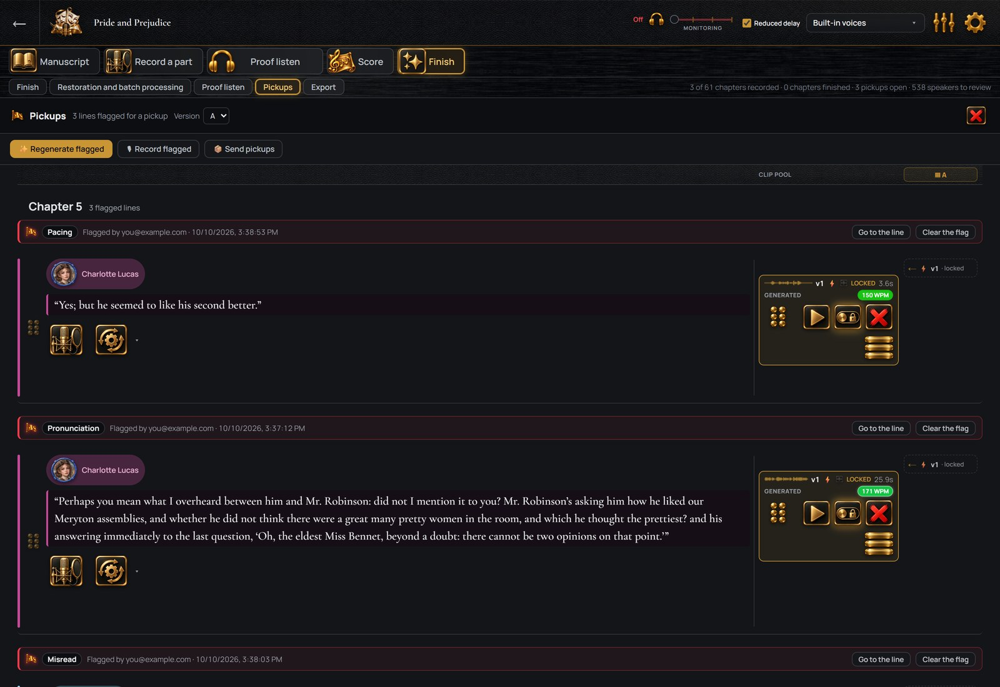
The Pickups list, with the reason on each line.
The files Audible requires, or one chaptered file
Export one file per chapter in the format Audible’s ACX requires, or one M4B file with chapter marks for other stores, or both. You choose which recordings go in, the picked ones or a whole spool. The pauses between lines are measured on export and set to the lengths you chose for a sentence end and a paragraph break. A muted track is left out of the export, and the export window says so first.
ACX: one file per chapter, in the format ACX requires
One M4B file with chapter marks, the title and the author, for other stores
The picked recordings, or the newest where none is picked
A warning for lines with nothing picked or not yet proof-listened, and for a muted track
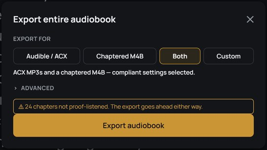
The export window.
Computer voices and Audible’s rules
ACX does not accept computer-generated narration. A reading you recorded yourself and then converted into a character’s voice is still your performance, and the original recording is kept beside every converted one. Every exported file is labeled. A file with a computer-generated voice is marked as containing AI-generated narration, and a file with a reading you recorded and converted is marked as containing a speech-to-speech modified human performance. The export window counts the generated and converted lines before you export.
Your computers
Up to three of your computers
Sign in on a second computer and the first one asks whether to let it receive your books. After that the two computers are paired, with no code to type. You send a book straight to another of your computers, or keep it in sync across them. While your main computer is on, you open its library from the other one to listen and read your notes.
Three computers, one person, listed under Settings › Account
Send a book directly, over your home network or the internet
A removed computer loses access everywhere
StellAurator Nebula, the optional cloud storage add-on, moves books between your computers, encrypted before they leave; the prices are on the pricing page
Technical details
What it runs on
64-bit Windows 10 or 11 today; a Mac version and phone apps are on the way (get notified). The installer is signed, so Windows shows the publisher when you run it. The twenty-six built-in voices and every part of the studio except the optional services work without an internet connection.
What it reads and writes
Manuscripts as Word, PDF, EPUB or text files. Recordings as mp3 or wav files, among other common formats. Finished audiobooks as one file per chapter in ACX’s format, or one M4B file with chapter marks. A whole book, with its cast and its recordings, as one backup file you open on another of your computers.
Themes
Twelve themes restyle every screen, all included. See the themes.
Start your free 7-day trial
No card. A practice book and a walkthrough are included. Exporting the finished audiobook comes with a plan.